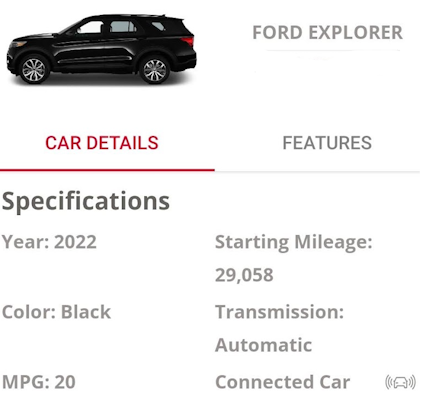

Day 1 - Spring Roadtrip from MSY to AUS
Come along for the ride as I share my Spring roadtrip from New Orleans, Louisiana to Austin, Texas.
Cover art generated by Dalle-2.
The Map
Every roadtrip has a map. Follow along as I take you on an 1500 mile trip across the third coast.
The Playlist
I created a Spotify Playlist for this roadtrip. It’s a mix of Bayou, Texas Coastal, and San Antonio / Austin country. Why not listen along as you read my trip report.
Day 1 - Getting Started
Hopped an American Airlines flight from Las Vegas to New Orleans via Dallas-Fort Worth. I pickup my one-way rental at Avis, where they searched for the highest mileage car they had. This means I would be driving a nice Ford Explorer Limited with 29K miles instead of the mid-size car I reserved. I consider this an upgrade. 😄

From MSY to Morgan City
I headed straight out of New Orleans via I-310 South, crossing the Mississippi and on to State Route 90. I try to avoid Interstates and main routes if I can help it, so when I got a chance to take the “Old Spanish Trail” near Paradis, I took it.

Stop 1 - Des Allemands / Shell Mound Cemetary
During my pre-roadtrip planning, I scouted a stop near Des Allemands, called Shell Mound Cemetary. “Des Allemandes” translates in French to mean “the Germans”, it was one of the original German settlements established in 1721. It turns out this area has a much richer history, being part of the “Sims Site” archaelogical site. In a report from Rob Mann we learn the site originally consisted of at least five earthen mounds, only two mounds and possibly the remnants of a third mound are extant today.
I never really located one of the mounds, but looking back at my pictures, there may be one in the back of the first photo below. 🤪

It turns out I got a couple of bonus shots from this stop. The first is of a moss encrusted tree overlooking a green pond. To get this shot, I crossed the railroad tracks and drove a short way down Shell Mound Road.

Across the street from the cemetary, google maps highlights the “Photo Tree Des Allemands”. While it’s an interesting tree, I found the one above more photogenic.
The second shot was of a broken cross grave marker in Shell Mound Cemetary.

With my playlist rollin’ and the scenery I was catchin’ I was soon in the Bayou Mood, so I wrote this…
Bayou Mood Headin' down the Delta Gonna see what I can find, Headin' down the Delta Gonna see what I can find, Broken cross at the crossroads Don't do much to ease my mind.
Stop 2 - Bayou LaFourche
It was back on the highway towards Raceland, but instead of continuing East, I turned down LA1 which follows Bayou LaFourche. Before the highway, the river was the main thoroughfare through this area. Louisia Dread has a great series of YouTube videos about all of the communities lining it’s path.
For my trip through Louisiana, I reached out to the r/Louisiana Reddit group for places to see. Two places along this route were suggested (see map at the beginning of this post for more detail.)
Unfortunately both places were not open the hours I drove by, so instead I decided to stop along the side of the Bayou to grab a couple of shots. Listening to the playlist, and driving through the small communities put my mind in a very laid back mood.


It was getting to be late morning, and I still needed to make Morgan City in time for dinner, so I turned back North.
Stop 3 - Quick Bite in Houma
I drove through Houma, with a quick stop a the Fiery Crab Seafood Restaurant and Bar. The goal was to stop in for a quick bite and a cold beer. Little did I know that this type of restaurant specializes in Seafood Boils. I wasn’t that hungry, so I had some fried oysters and a Bud Light.
Stop 4 - E.D. White Historic Site
I continued my scenic drive along Bayou LaFourche. The drive being quite mellow and scenic, I arrived a bit late to this stop. The historic site is the residence of two of Louisiana’s foremost political figures: Edward Douglas White, who was governor from 1835 to 1839, and his son, Edward Douglass White, who was appointed to the United States Supreme Court in 1894 and served as chief justice from 1910 to 1921.


It was a good learning opportunity for me. I’m testing out my Roadtrip App on my drives, and one thing I need to pull into list is hours of operation, much like google maps does. Right now, the App will present you with a list of nearby historical markers and give you some information about them (more on this in a future post.)

Stop 5 - Morgan City
After a long day of driving, I was ready ready to check-in to my hotel for the night. When I landed at MSY, I booked my room at the Morgan City Best Western. Super nice people, with clean comfortable rooms. I’d stay here again.
Okay, that’s Day 1. I guess I’ll make each Day their own post.
Let’s Connect
You can reach out to me on:
- Instagram - @tripperista
- Instagram - @mikelor
- Mastodon - @mikelor@awscommunity.social
- Twitter - @mikelor